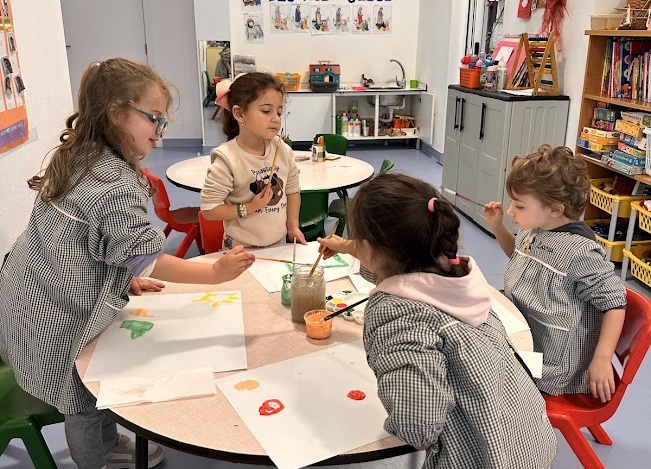
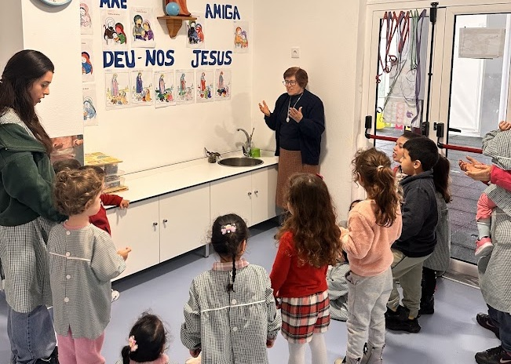
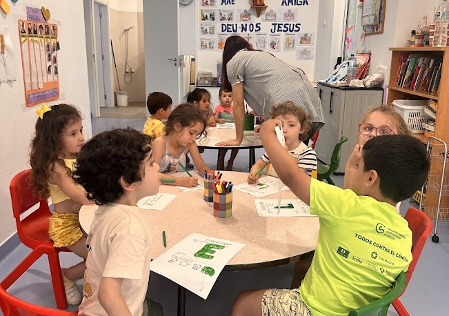
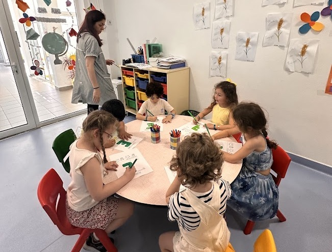
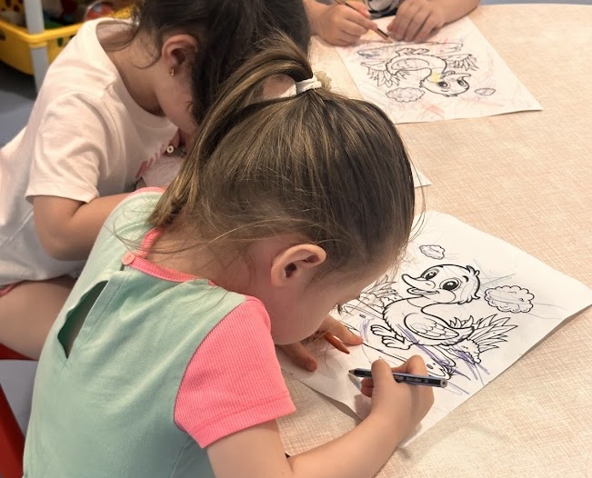
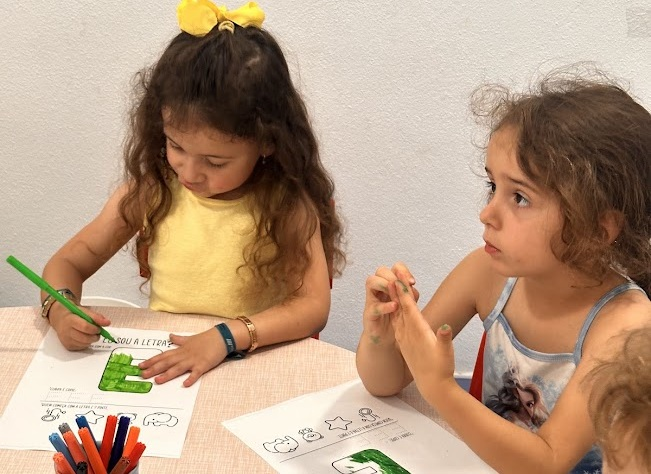

Sobre o Jardim de Infância
O Jardim de Infância constitui a primeira etapa da educação básica, desempenhando um papel essencial no desenvolvimento físico, emocional, social e intelectual das crianças.
Na Fundação Centro Social Nossa Senhora do Paço valorizamos uma aprendizagem ativa, onde brincar, explorar, imaginar e experimentar fazem parte do crescimento diário de cada criança.
Promovemos um ambiente acolhedor, seguro e estimulante, onde cada criança desenvolve autonomia, criatividade, espírito crítico e competências sociais, respeitando sempre o seu ritmo individual.
O nosso projeto educativo
Desenvolvimento integral da criança.
Promoção da autonomia e da autoestima.
Aprendizagem através da brincadeira e da descoberta.
Expressão artística, criatividade e imaginação.
Desenvolvimento das competências sociais e emocionais.
Parceria permanente entre escola e família.
O que oferecemos
Equipa educativa qualificada.
Projeto pedagógico centrado na criança.
Atividades de expressão plástica, musical e motora.
Espaços interiores modernos e seguros.
Espaços exteriores para exploração e brincadeira.
Promoção da leitura e da linguagem.
Educação para valores e cidadania.
Acompanhamento próximo das famílias.
Documentos e Informações
Consulte a documentação e as informações relativas ao funcionamento do Jardim de Infância.
Contacte-nos
Para esclarecer qualquer dúvida sobre o Jardim de Infância, entre em contacto connosco.